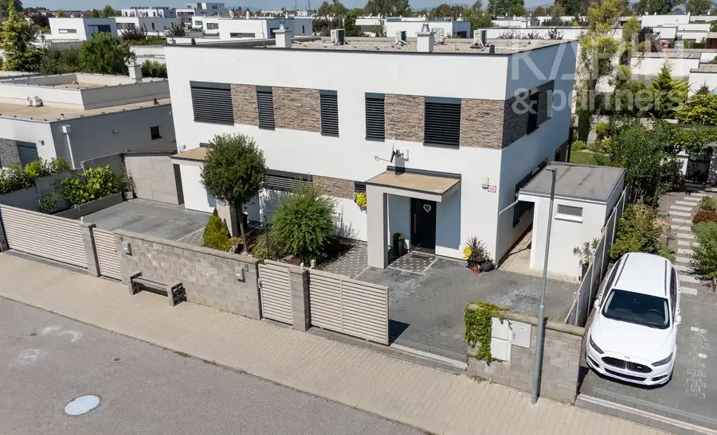
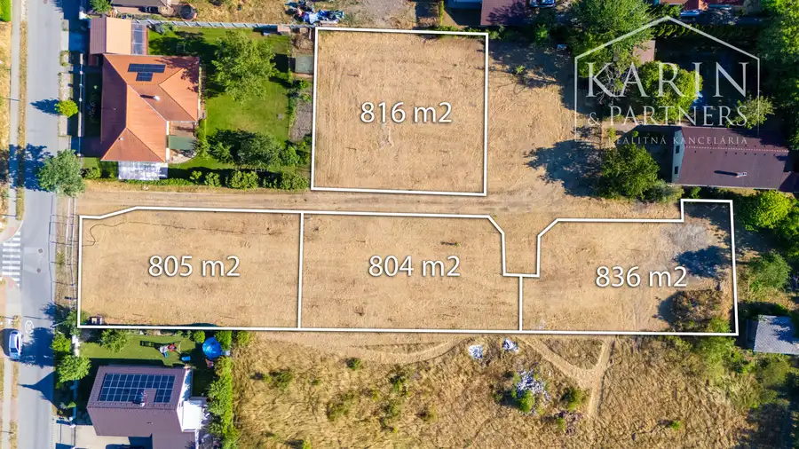
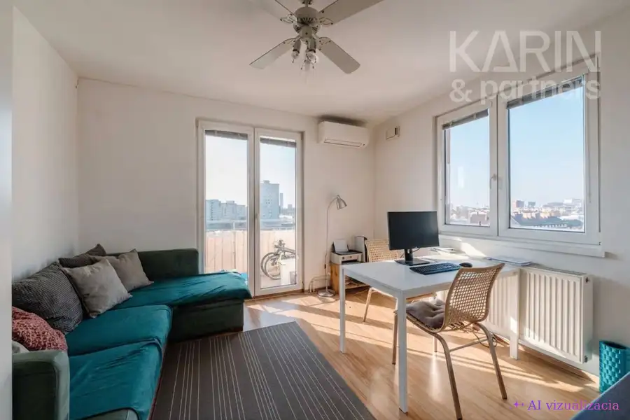

Kompletne vkusne zariadený 3I byt s balkónom | Matadorka
Petržalka, Bratislava
- Dispozícia3-izbový
- Plocha66.98 m²
- StavNovostavba
- VlastníctvoOsobné
O nehnuteľnosti
polyfunkčný bytový komplex s parkom vo vnútrobloku | dostatok úložného priestoru | podlahové kúrenie aj chladenie | kúpou voľný | v tesnej blízkosti autobusová zastávka a Železničná stanica Bratislava-PetržalkaTúžite po nadštandardnom bývaní v obľúbenej mestskej časti Petržalka s rýchlou dostupnosťou do centra aj na diaľničný obchvat? Tento presvetlený trojizbový byt v projekte Matadorka s kvalitnou a nadčasovou architektúrou si zamilujete na prvý pohľad.Realitná kancelária KARIN & PARTNERS ponúka vo výhradnom zastúpení na predaj kompletne zariadený trojizbový byt s balkónom na ulici Gustáva Mallého v mestskej časti Bratislava – Petržalka.Vstúpte do virtuálnej prehliadky:https://my.matterport.com/show/?m=ZsAjvK2SksVByt:Tento moderný byt sa nachádza na 5. podlaží zo 6 v novostavbe bytového domu s výťahom. Dispozične pozostáva zo spojenej obývacej izby s kuchyňou a jedálňou, dvoch samostatných izieb, kúpeľne s toaletou a chodby.Po pravej strane po vstupe do bytu sa nachádza kúpeľňa so sprchovým kútom, umývadlom, zrkadlom, toaletou a práčkou. Po ľavej strane sú situované dve samostatné neprechodné izby - priestranná spálňa a druhá izba ideálna ako detská izba alebo pracovňa. Chodba je vybavená rozľahlou vstavanou skriňou, ktorá zabezpečuje dostatok úložného priestoru.Srdcom bytu je svetlá obývacia izba prepojená s kuchyňou so vstavanými spotrebičmi. Z tejto miestnosti je výstup na priestranný balkón s výmerou 6,5 m²orientovaný na juhozápad, ktorý poskytuje ideálne miesto na rannú kávu či večerný relax.Veľkým benefitom bytu je moderný systém podlahového vykurovania a chladenia.Byt sa predáva kompletne vkusne zariadený nábytkom a spotrebičmi, ako je vyobrazené na fotografiách a je kúpou voľný.Bytový dom:Byt sa nachádza v polyfunkčnom bytovom komplexe MATADORKA. Bytový dom disponuje 6 nadzemnými podlažiami, moderným výťahom, čistými a reprezentatívnymi spoločnými priestormi a vysokým štandardom bývania spolu s všestrannou občianskou vybavenosťou.Rozsiahly vnútroblok o rozlohe 1400 m² disponuje multifunkčnými ihriskami, komunitnými záhradkami a množstvom zelene, ktorá nielen znižuje lokálnu teplotu, ale aj výrazne prispieva k estetickej hodnote.Lokalita:Bytový komplex je situovaný na ulici Gustáva Mallého v mestskej časti Bratislava – Petržalka, ktorá poskytuje kompletnú občiansku vybavenosť. V blízkom okolí sa nachádzajú obchody, kaviarne, reštaurácie či dokonca škôlka priamo v objekte. Na aktívny oddych a relax výborne poslúži neďaleké Letné kúpalisko Matadorka, cyklotrasy či športoviská. Skvelú dopravnú dostupnosť zabezpečuje blízka železničná stanica Bratislava – Petržalka a zastávky MHD, vďaka ktorým sa do centra mesta dostanete za pár minút. Výhodou je tiež rýchle napojenie na obchvat Bratislavy.Silné stránky tohto bytu sú najmä:- moderný projekt Matadorka v obľúbenej lokalite Petržalky,- kompletne vkusne zariadený vstavaným nábytkom aj spotrebičmi,- unikátne podlahové kúrenie aj chladenie,- priestranný balkón s rozlohou 6,5 m² orientovaný na JZ,- dostatok úložného priestoru vo vstavanej skrini na chodbe a spálni,- v blízkosti autobusová zastávka MHD, železničná stanica aj diaľničný obchvat,- kúpou voľný, pripravený na okamžité nasťahovanie.Výmera: úžitková plocha: 66,98 m² (z toho balkón 6,5 m²)Náklady na bývanie : 240 € / mesiacCena za byt: 296 000 € (dohoda možná)V cene sú zahrnuté služby RK: komplexný právny servis - vypracovanie všetkých druhov zmlúv potrebných k predaju, poplatok za overenie podpisov na kúpnych zmluvách, správny poplatok za vklad do katastra nehnuteľností, odovzdanie nehnuteľnosti.Pre našich klientov poskytujeme osobný a profesionálny prístup pri predaji, rýchlosť a znalosť trhu. Pomôžeme Vám s predajom, prenájmom alebo kúpou Vašej novej nehnuteľnosti. Zároveň vieme sprostredkovať finančné služby v oblasti hypoték. V prípade vážneho záujmu ma neváhajte kontaktovať.Fotografie a text sú autorským dielom spoločnosti KARIN & PARTNERS.Kontakt k obhliadke:Michal Šumeccertifikovaný realitný maklérčlen Realitnej Únie Slovenskej republiky+421 948 038 459sumec@karinpartners.sk
Parametre
| Cena vrátane energií | Nie |
|---|---|
| Druh | 3 izbový byt |
| Dátum zverejnenia | 27. 8. 2026 |
| Orientácia | Juhozápadná |
| Plocha balkónu v m2 | 6.5 m² |
| Stav nehnuteľnosti | Novostavba |
| Typ | Predaj |
| Vlastníctvo | Osobné |
| Vybavenie | Balkón, Výťah |
| Úžitková plocha | 66.98 m² |
Kde to je


Mohlo by Vás zaujímať

DomNové10 413 000 €Moderný 4I rodinný dom s očarujúcou záhradou | Rovinka Residence Rovinka 109.2 m² špajza | krb v obývacej miestnosti | exteriérové žalúzie | klimatizácia | podlahové kúrenie | alarm | terasa s pergolou | záhradný domček | vlastná…
PozemokNové10 Cena dohodouRozľahlé stavebné pozemky pripravené na okamžitú výstavbu Miloslavov 836 m² stavebné povolenie | inžinierske siete | možnosť zabezpečiť stavbu | výborné dopravné napojenieTúžite po vlastnom bývaní v blízkosti Bratislavy? Nech…
BytNové7 Cena dohodouSvetlý zariadený 2I byt s lodžiou s výhľadom na hrad | Nivy Ružinov, Bratislava 2-izbový32.74 m² 8. poschodie z 8 | klimatizácia | zvieratá akceptované | zastávka električky iba 5 minút peši | voľný od 1.10.2026Hľadáte komfortné mestské bývanie v…